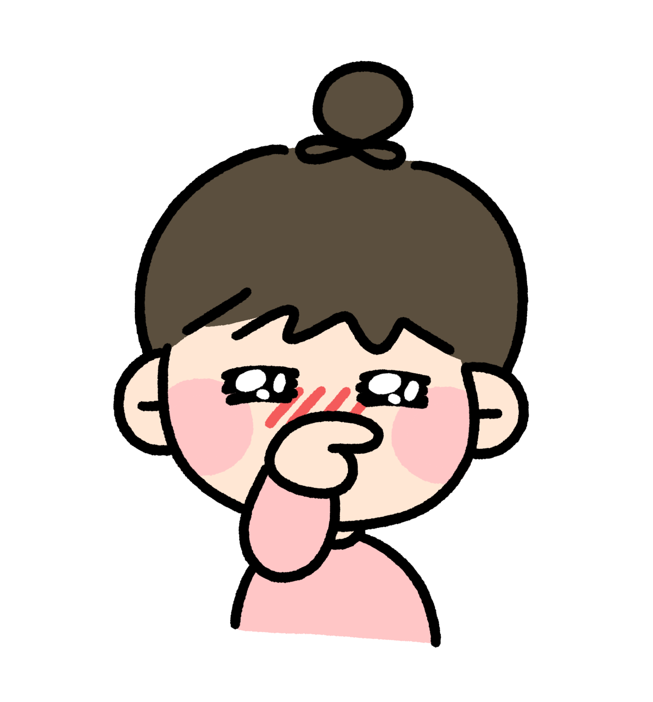

투빈맘's 속닥속닥아이도 배웠지만,
엄마도 많이 배웠어요
경빈이는 초2 때 필즈를 주 1회, 3시간씩 다녔어요. 오래 다닌 건 아니고, 6개월 정도 잠시 다녔습니다. 다니는 동안에는 필즈 숙제와 연산 숙제만 했고, 별도의 수학 문제집은 풀지 않았어요. 그 짧은 경험 중 지금까지 우리 집에 남아 있는 것들을 정리해봤어요.
처음에는 초2 아이가 3시간 수업을 소화할 수 있을까 싶었어요. 그런데 그 경험 덕인지, 이후 방학에 수학을 2~3시간 하는 날에도 아주 힘들어하진 않더라고요. 긴 시간 수학을 해본 경험 자체가 남은 것 같았어요.
필즈에서 어려운 문제를 여러 번 만나봐서일까요? 황소처럼 어렵다고 하는 시험도 한번 도전해보고 싶어 해요. 어려운 문제를 다 풀 수 있게 됐다는 뜻은 아니지만, 어렵다고 듣고도 해보고 싶어 하는 마음은 반가웠어요.
필즈 숙제는 저도 설명해주기 버거웠어요. 다행히 동영상이 제공됐고, 선생님이 문제마다 ○(스스로 풀어서 맞혔으면) △(동영상을 보고 맞혔으면) ★(그래도 모르겠으면)로 표시하도록 알려주셨어요. 그 방법이 습관이 돼서 지금 최상위 문제집을 풀 때도 쓰고 있어요. 제가 동생 엄마표를 하느라 바로 봐주지 못할 때도, 스스로 동영상을 보고 어디까지 이해했는지 표시하며 공부를 이어가요.
필즈를 시작할 때 경빈이의 연산은 현행 진도였어요. 그래서 초반 1~2개월은 수업 진도를 따라잡으려고 연산 문제집을 부지런히 풀었습니다. 이때는 저도 아이도 바빴어요ㅠㅠ. 연산 진도는 그냥 저절로 나간 게 아니라, 집에서 함께 챙긴 부분이었어요.
아이를 학원에 보냈는데 저도 배운 게 많았어요. 연산 진도를 챙기는 것부터, 혼자 푼 문제와 도움받은 문제를 구분하는 것까지요. 집에서 아이 수학을 어떻게 봐줄지 배워가는 시간이기도 했어요.
숙제가 몇 문제 안 된다고 금방 끝나는 건 아니었어요. 한 문제를 풀기 위해 생각해야 하는 시간이 있었거든요. 몇 장을 풀었는지와 별개로, 한 문제를 깊이 생각해보는 경험을 했어요.
처음에는 어렵던 내용도 비슷한 문제를 반복해서 만나면서 조금씩 익숙해졌어요. 한 번 설명을 듣고 바로 이해하지 못해도, 다시 풀어보며 알아가는 부분이 있더라고요. 한 번에 이해했는지만 보지 않게 됐어요.
엄마 혼자 문제를 골랐다면 익숙한 유형만 챙겼을 수도 있겠다는 생각이 들었어요. 교재 안에서 여러 유형을 접하고 복습할 수 있다는 점이 좋았어요. 다니는 동안 별도 문제집을 더하지 않고, 주어진 공부에 집중했어요.
잘하고 싶은 마음이 생기니 숙제를 대하는 모습에도 도움이 됐어요. 엄마가 해야 한다고 말하는 것과 아이가 잘하고 싶어 하는 건 다르더라고요. 아이 자신의 마음도 공부를 이어가는 힘이 됐어요.
학원은 일주일에 한 번 갔지만, 다음 수업까지 할 숙제는 있었어요. 숙제를 조금씩 나눠 하면서 집에서도 수학을 챙기는 리듬이 생겼어요. 수업이 없는 날에도 해야 할 공부가 정해져 있다는 점이 도움이 됐어요.
수업 시간이 길다는 것과 아이가 싫어한다는 건 꼭 같은 이야기는 아니었어요. 경빈이는 긴 수업이어도 즐겁게 다녔어요. 시간표에 적힌 '3시간'만으로는 알 수 없었던 아이의 반응이었어요.
아이 공부를 함께 보다 보면 저도 "이렇게 풀 수도 있구나" 싶은 순간이 있었어요. 답을 구하는 것뿐 아니라, 문제에 접근하는 방법을 저도 배우게 됐어요. 제가 알고 있는 풀이가 전부는 아니더라고요.
집에서 엄마가 보는 모습만으로는 알기 어려운 부분도 있었어요. 선생님 피드백을 통해 아이의 학습 상황을 이해하는 데 도움을 받았어요. 집에서 보이는 모습에 수업에서의 모습을 더해볼 수 있었어요.
어디까지 진도가 나갔는지도 보지만, 아이가 그 공부를 소화하고 있는지도 보게 됐어요. 어려운 내용을 접하는 것과 자기 것으로 만드는 데는 차이가 있으니까요. 우리 아이의 이해와 부담을 보며 속도를 조절하는 경험도 했어요.
필즈를 오래 다닌 건 아니에요. 초반에는 연산 진도를 따라잡느라 부지런히 공부해야 했고, 숙제는 엄마에게도 어려웠어요. 그래도 그때 배운 방법 중에는 지금도 쓰는 것들이 있어요.
초1, 필즈레테 후기
초2, 필즈 레테 후기
초2, 필즈 6개월 후 그만둔 이유
엄마표를 하고 있다고 해서 '학원은 무조건 안 된다'는 입장은 아니에요. 학원도 장단점이 분명히 있거든요. 다른 집엔 단점이었던 게, 우리 아이에겐 오히려 장점이 될 수도 있어요. 우리 아이에게 뭐가 맞는지, 엄마에게 뭐가 맞는지 판단해서 보내시면 돼요.
경빈이는 막혔을 때 공부를 이어가는 방법을,
저는 아이 수학을 봐주는 방법을 배웠어요.